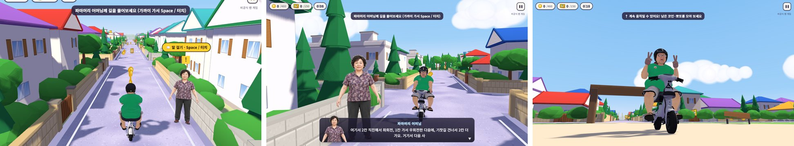
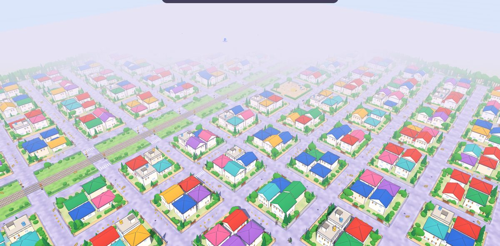
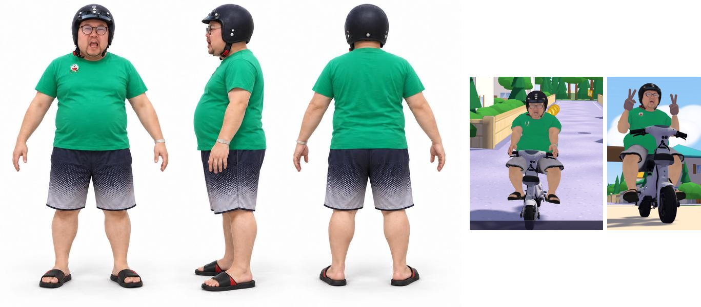
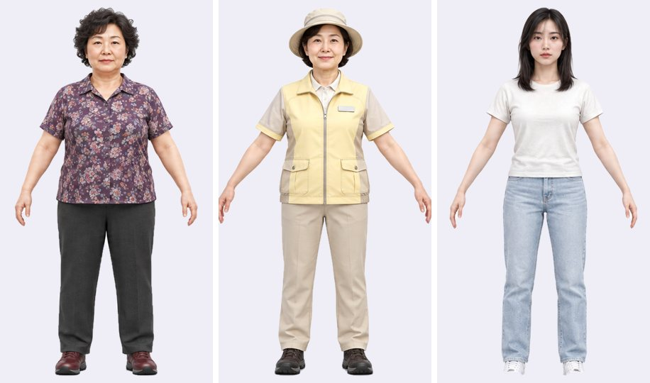
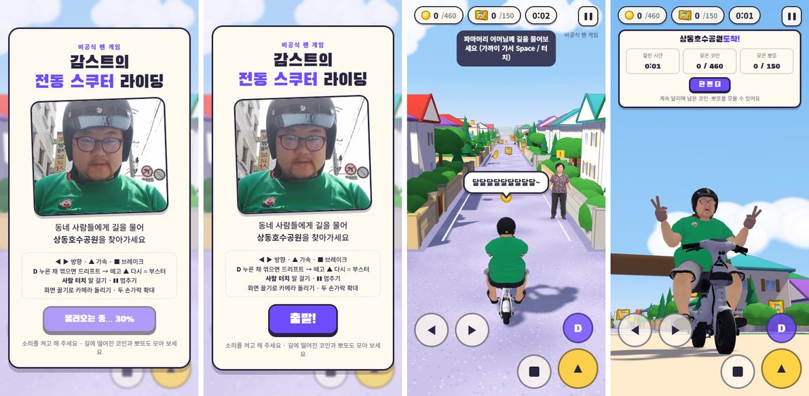

전동 스쿠터를 탄 감스트가 파스텔색 주택가를 달린다. 상동호수공원 가는 길을 몰라서 동네 사람 셋에게 차례로 묻고, 들은 대로 골목을 돌고 기찻길을 건너 공원 한가운데 포탈에 닿으면 끝이다. 가는 길에는 코인 460개와 뽀또 150개가 떨어져 있다. 방송 밈 대사("비감입니다", "인디기 재미떠여", "나 뽀또 한번만!")가 실제 목소리로 나온다.
비공식 팬 게임이다. 링크는 목록에 올리지 않고, 릴스에 댓글을 단 사람에게만 DM 으로 보냈다. 릴스는 올린 지 하루가 안 돼 100만 조회를 넘었고 팔로워가 1,000명 넘게 늘었다. 나흘 동안 만들었다. 이 글은 무엇으로 어떻게 만들었는지, 걸린 것들을 어떻게 풀었는지 적는다.

한눈에 보는 구조
게임에는 서버가 없다. 동네, 주행, NPC, 소리까지 전부 방문자의 브라우저에서 돈다. 서버가 하는 일은 파일 8.7MB 를 한 번 건네주는 것뿐이다. 대신 이번엔 링크가 사람에게 가는 길이 하나 더 생겼다. 주소를 공개하지 않고 인스타 DM 자동화로만 나눠 줬다.
← 옆으로 밀어 보기 →
무엇을 왜 골랐나
| 자리 | 고른 것 | 이유 |
|---|---|---|
| 그리기 | Three.js + 순수 JS, 빌드 없음 | 범퍼카 2026 에서 쓰던 구조 그대로. 고치고 새로고침하면 끝 |
| 동네 | 코드로 쌓은 집 + 캔버스로 그린 무늬 | 참고 그림 세 장과 거의 똑같은 동네가 필요했다. 모델 파일로 받으면 수십 MB, 코드로 쌓으면 0 |
| 주인공 · 스쿠터 | Tripo (AI 3D 생성), 따로따로 | 탄 채로 한 덩어리로 만들면 뼈를 못 넣어 손을 못 움직인다. 따로 만들어 코드로 앉혔다 |
| 동네 사람 셋 | 그림 판 | 서서 말만 한다. 3D 로 만드는 것보다 그림 그대로가 원본에 가깝다 |
| 목소리 | 방송 영상에서 자른 mp3 12개 | 밈은 그 목소리여야 웃기다 |
| 엔진 · 끼익 · 코인 소리 | Web Audio 로 그 자리에서 합성 | 엔진 소리는 속도에 따라 계속 변해야 한다. 녹음 파일로는 어렵고, 합성하면 속도를 음높이에 바로 이을 수 있다 |
| 배포 | Cloudflare Pages, 목록에 없는 주소 | 이 사이트가 이미 거기 있다. 먼저 팔로워에게만 보여 주고 싶었다 |
| 링크 전달 | 리틀리 DM 자동화 | 댓글 단 사람에게 버튼 달린 DM 을 자동으로. 릴스를 본 사람이 팔로우까지 하게 |
Three.js — 브라우저의 3D 기능(WebGL)을 쓰기 쉽게 감싼 자바스크립트 라이브러리. 장면·카메라·조명·모델을 객체로 다룬다.
Web Audio API — 브라우저에서 소리를 "회로"처럼 다루는 기능. 소리를 만드는 칸(발진기), 거르는 칸(필터), 크기 칸을 선으로 이어서 소리를 만들거나 파일을 튼다.
noindex — 검색엔진에게 "이 페이지는 검색 결과에 넣지 마"라고 알리는 표시. 주소를 아는 사람만 들어온다.
코드는 다섯 파일
← 옆으로 밀어 보기 →
동네는 전부 코드로 쌓았다

맵은 미리 골라 둔 참고 그림 세 장(골목길·놀이터·철도 건널목, 1점 투시 파스텔 주택가)과 거의 똑같아야 했다.
바둑판으로 길을 깔고(블록 간격 34m, 길 폭 8m, 가로·세로 7줄씩), 블록마다 집을 세웠다.
아스팔트의 연보라 결, 베이지 담장 블록, 창문과 덧창 같은 무늬는 이미지 파일 대신 <canvas>에 코드로 그려 텍스처로 썼다. 받을 파일이 없으니 동네는 다운로드가 0 이다.
- 지붕을 섞었다. 처음엔 같은 모양 지붕이 줄지어 있어서 복사한 티가 났다. 모임지붕, 박공지붕, 물탱크 얹은 평지붕을 섞고 색을 돌렸다. 박공지붕 양 끝 삼각형이 지붕 끝에서 살짝 안쪽에 붙어 있어서 지붕마다 틈이 뚫려 보였는데, 지붕 끝에 딱 맞게 옮겨 막았다.
- 막는 건 맵 끝뿐. 처음엔 기찻길·공원·놀이터에 울타리를 쳤더니 길을 가로막아 답답했다. 맵 끝 사각형만 막고 나머지는 다 들어갈 수 있게 했다. 호수에 들어가면 느려진다.
- 벽에 박히지 않게. 담에 부딪히면 그 자리에 멈추지 않고 벽을 따라 미끄러진다. 정면으로 들이받았을 때만 속도를 줄인다. 골목이 좁아서 멈추게 하면 계속 끼었다.
길 안내는 일부러 멀리 돌게
처음 경로는 너무 짧아서 금방 끝났다. 세 사람이 알려 주는 길을 이어 붙이면 기찻길을 세 번 건너 동네를 크게 한 바퀴 돌도록 바꿨다. NPC 의 안내 문장과 실제 길이 어긋나면 게임이 망가지니, 칸(교차로 하나) 단위로 경로를 먼저 정하고 대사를 거기에 맞춰 썼다.
← 옆으로 밀어 보기 →
뽀또는 처음에 기찻길·놀이터·공원 잔디에 몰아서 뿌렸다. 그랬더니 붙어 있는 뽀또를 연달아 먹을 때 대사가 앞 대사를 끊고 시작해서 아무 말도 끝까지 안 들렸다. 맵 전체에 약 22m 간격으로 고르게 다시 뿌렸다. 이 문제는 아래 "소리" 에서 대사 순서로도 한 번 더 막았다.
주인공 — 그림 한 장으로 3D 사람 만들기
주인공과 스쿠터는 Tripo 로 따로 만들었다. 팔을 살짝 벌린 A 자 자세의 정면·옆·뒤 그림을 한 장에 뽑고, 셋으로 나눠 넣는다. 스쿠터도 같은 식으로 앞·옆·뒤 그림을 넣었다. Tripo 작업은 내 유료 계정으로, 브라우저에서 클릭해 진행했다.

← 옆으로 밀어 보기 →
Tripo 가 준 것과 내가 원한 것 사이
| 증상 | 원인과 고친 것 |
|---|---|
| 얼굴이 뒤통수에 달림 | 옆모습 그림을 엉뚱한 칸에 넣어서 Tripo 가 앞뒤를 거꾸로 읽었다. → 옆모습을 '왼쪽' 칸에 넣고 다시 만들었다 |
| 4K 로 받은 파일이 깨짐 | 뼈의 쉬는 자세를 적은 행렬(inverse bind matrix)이 망가져 나왔다. → 2K 로 다시 받았다. 폰 화면에서 얼굴은 손바닥만 해서 2K 로 충분하다 |
| 허리가 얇고 어깨가 튀어나옴 | 살을 뼈에 붙이는 방식이 체형을 깎았다. → 붙이는 규칙을 손보고, 게임에서 옆구리 살을 몸 폭의 20% 만큼 바깥으로 밀었다 |
| 등(광배)이 패여 보임 | 겨드랑이 뒤쪽 살을 몸통에 붙이는 규칙을 더했더니 팔이 이상하게 접혔다. → 되돌렸다. 팔이 더 중요했다 |
| 얼굴이 Tripo 와 달라 보임 | 아래 세 번 |
얼굴은 이 게임의 전부라 가장 오래 붙잡았다. 같은 문제가 세 가지 다른 이유로 세 번 나왔다.
- 자세를 잡으면서 머리를 돌렸다. 앉힐 때 목·머리 뼈도 앞을 보게 돌렸더니, 얼굴 살이 늘어나 다른 사람처럼 보였다. 머리는 손대지 않고 통째로 따라오게만 했다.
- 사진 얼굴을 덧칠했다. 정면 그림의 얼굴을 모델 텍스처에 투영해 덮는 스크립트(
face_bake.py)를 만들었다. 정면에선 비슷한데 비스듬히 보면 그림이 미끄러져 어색했다. 버렸다. - 조명이 얼굴색을 바꿨다. 동네의 보랏빛 그늘과 강한 해가 얼굴을 어둡고 붉게 물들였다. 사람에게만 빛 받는 몫을 줄이고 텍스처 원래 색을 스스로 내게(emissive) 해서, Tripo 미리보기 밝기에 맞췄다.
세 번 겪고 정한 규칙은 하나다. 얼굴은 건드리지 않는다. 몸은 고쳐도 되지만 얼굴 근처는 뼈도, 살도, 텍스처도 손대지 않는다.
리토폴로지 — 모델의 삼각형을 다시 짜서 개수를 줄이는 것. 모양은 거의 그대로 두고 가볍게 만든다.
리깅 · 스키닝 — 모델 안에 뼈대를 넣고, 살(꼭짓점)마다 어느 뼈를 얼마나 따라갈지 적는 것. 이게 잘못되면 뼈를 돌려도 살이 엉뚱하게 늘어난다.
emissive — 재질이 빛을 받지 않아도 스스로 내는 색. 조명이 어두워도 그만큼은 밝게 보인다.
스쿠터에 앉히고, 브이 하기
스쿠터 모델에서 안장 윗면, 핸들 손잡이, 발판 자리를 코드로 찾는다. 사람의 엉덩이를 안장에 놓고, 팔과 다리는 두 마디 IK 로 손끝이 손잡이에, 발이 발판에 정확히 닿게 했다. 모델 크기가 바뀌어도 다시 찾으니 손이 허공을 잡지 않는다.
- 브이 손은 코드로 만들었다. Tripo 의 손은 손가락이 붙은 벙어리장갑 한 덩어리라, 손가락 뼈를 굽혀도 V 가 안 된다. 브이 할 때만 원래 손을 크기 0 으로 접어 숨기고, 검지·중지만 편 살색 손(캡슐 몇 개)을 손목에 붙였다.
- 양손을 반대로 흔든다. 처음엔 두 손이 같은 쪽으로 흔들려 어색했다. 한 손이 바깥으로 갈 때 다른 손은 안으로 가게 거울처럼 뒤집고, 빠르게(초당 3.5번) 흔들었다.
- 도착해도 안 끝난다. 포탈에 닿으면 1.6초 세워 브이 장면을 보여 주고, 그 뒤엔 다시 달릴 수 있다. 남은 코인·뽀또를 모으다 멈추면 또 브이 하고 손을 흔든다.
IK (역운동학) — "손이 여기 닿아야 한다"는 끝 위치를 주면, 어깨·팔꿈치를 얼마나 굽힐지 거꾸로 계산하는 것. 각도를 하나하나 맞추는 대신 목표 지점만 준다.
동네 사람 셋은 그림 판

NPC 는 서서 말만 한다. 그래서 3D 로 만들지 않고 늘 카메라를 향하는 그림 판으로 세웠다. 3D 모델은 얼굴이 원본과 조금씩 달라지지만, 그림은 원본 그대로다. 주인공이 스쿠터와 함께 1.8배로 커졌기 때문에, NPC 키도 3.4m 로 맞춰 나란히 섰을 때 어색하지 않게 했다.
카메라 세 가지
| 언제 | 어디서 |
|---|---|
| 달릴 때 | 스쿠터 뒤 위에서 따라간다. 끌어서 돌리고 휠·두 손가락으로 확대. 2.5초 안 만지고 달리면 뒤로 돌아온다 |
| 길 물을 때 | 두 사람을 옆에서 같이 잡는다 (아래) |
| 도착했을 때 | 바닥 가까이에서 올려다본다. 브이 하는 사람이 하늘을 등지고 크게 선다 |
어려웠던 건 대화 카메라다. 처음엔 "스쿠터 앞쪽 옆"에 고정해 뒀는데, NPC 가 담 옆에 서 있으면 카메라가 담 너머로 가서 벽만 찍었고, 피하려고 당기면 얼굴에 너무 붙었다. 그래서 자리를 하나로 정하지 않고, 후보 24곳 중 점수가 가장 높은 곳을 고르게 바꿨다.
← 옆으로 밀어 보기 →
드리프트는 관성이 남아야 한다
범퍼카 2026 의 규칙을 가져왔다. Shift(폰은 D 버튼)를 누른 채 꺾으면 미끄러지고, 끝나고 ↑ 를 다시 누르면 부스터다. 그런데 그대로 옮겨서 타 보니 드리프트 느낌이 이상했다. 미끄러지다 손을 떼는 순간 차가 딱 바로 서 버렸다.
← 옆으로 밀어 보기 →
고친 건 그립이 돌아오는 속도다. 드리프트에 들어갈 땐 옆 그립이 0.1초 만에 0.8 까지 빠지고, 손을 떼면 그보다 세 배 넘게 느리게 10 으로 돌아온다. 그래서 손을 뗀 뒤에도 잠깐 가던 방향으로 밀리며 펴진다. 부스터도 범퍼카의 빨간 불꽃 대신 전동 스쿠터에 어울리게 하얀 연기와 바람 소리로 바꿨다.
그립 — 여기서는 "옆으로 미끄러지는 속도를 1초에 얼마나 죽이나". 크면 바퀴가 길을 꽉 물고, 작으면 얼음판처럼 옆으로 흘러간다.
소리 — 목소리는 자르고, 엔진은 만들고
목소리: 내가 자른 그대로
방송 장면을 모은 영상 하나를 받아서, 대사마다 시작·끝 초를 적어 ffmpeg 로 12개를 잘랐다(cut_voices.py).
처음엔 이어지는 대사를 다시 잘라 붙이고 끝을 서서히 줄였는데, 들어 보니 오히려 어색했다. 내가 자른 구간 그대로, 페이드도 없이, 원래 섞여 있던 소리도 빼지 않고 전부 원본대로 되돌렸다. 밈은 다듬으면 맛이 빠진다.
대사 순서 (game.js)
달리는 동안 "인디기 재미떠여!" 5초마다
"달달달달달~" 7초마다 (도착한 뒤에도 계속)
뽀또를 먹으면 ppotto1 → 2 → 3 차례로
다른 대사 중이면 줄(ppWait)에 세웠다가 그 말이 끝난 뒤에처음엔 뽀또 대사가 하던 말을 끊고 바로 나왔다. 뽀또를 연달아 먹으면 대사가 앞머리만 나오다 끊겼다. 줄을 하나 두어 하던 말이 끝난 뒤에 차례로 나오게 했다.
엔진: 파일 없이 합성, 그리고 소음 수정
← 옆으로 밀어 보기 →
첫 엔진 소리는 너무 작았다. 과격한 오토바이 소리라도 괜찮겠다 싶어서 거친 파형에 디스토션(일부러 찌그러뜨리기), 잡음, 각진 떨림을 얹었더니 이번엔 귀에서 지지직하는 소리가 너무 났다. 귀가 찢어질 것 같았다. 거친 소리를 내는 재료는 전부 높은 주파수를 많이 만든다. 이어폰으로 들으면 그게 바로 귀에 꽂힌다. 찌그러뜨리기·잡음·각진 떨림을 다 빼고, 둥근 파형(삼각파·사인파)과 저역 필터로 다시 만들었다. 대신 크기를 키우고, 떨림을 얕게 해서 존재감을 냈다.
드리프트 "끼익"도 같은 원칙이다. 잡음을 좁은 띠로 걸러 높은 음처럼 만들고, 띠를 초당 9번 살짝 흔들어 긁히는 느낌만 냈다. 위쪽은 깎고 크기는 작게.
발진기(oscillator) — 일정한 모양의 파형을 계속 내는 소리 재료. 사인파는 가장 둥글고, 삼각파는 조금 더 또렷하고, 톱니파·네모파는 높은 소리가 많아 거칠다.
저역 필터(low-pass) — 정한 주파수보다 높은 소리를 깎는 칸. 엔진처럼 낮게 웅웅거리는 소리를 만들 때 쓴다.
폰에서만 생긴 일

PC 로만 확인하고 올렸는데, 폰으로 직접 해 보니 스쿠터 소리는 나는데 캐릭터 목소리가 하나도 안 났다. 캐릭터도 처음에 바로 안 나타났다.
아이폰은 저절로 나는 소리를 막는다
목소리는 <audio> 태그로 틀고 있었다. 아이폰 사파리는 <audio>.play() 를 사람이 화면을 누른 그 순간에만 허락한다.
그런데 대사는 NPC 에게 다가가거나 뽀또를 먹을 때, 즉 아무것도 누르지 않은 순간에 나온다. 전부 막혔다.
엔진 소리만 났던 건 그게 처음부터 Web Audio 였기 때문이다. Web Audio 는 "출발" 버튼을 누를 때 한 번 깨워 두면 그 뒤로는 계속 소리를 낼 수 있다.
// 출발 버튼을 누른 순간 — 무음을 한 번 틀어 소리 회로를 깨운다 (아이폰)
const c = ctx(); c.resume();
const src = c.createBufferSource();
src.buffer = c.createBuffer(1, 1, 22050); src.connect(c.destination); src.start(0);
// 목소리 파일은 미리 받아서 풀어 둔다 → 대사 때는 바로 튼다
fetch(`assets/audio/${id}.mp3`).then(r => r.arrayBuffer())
.then(ab => ctx().decodeAudioData(ab))
목소리도 전부 Web Audio 로 옮겼다. 덤으로 멈추기 버튼이 쉬워졌다. 소리 회로 전체를 한 번에 얼렸다 풀면(suspend / resume) 대사와 엔진이 그 자리에서 멈췄다 이어진다.
출발을 늦게 켜기
폰에선 모델 5MB 를 받는 데 몇 초가 걸린다. 그동안 대신 세워 둔 임시 모형(상자 사람)이 달리다가 갑자기 감스트로 바뀌었다. 모델과 목소리를 다 받기 전엔 출발 버튼을 잠그고 "불러오는 중… n%" 를 띄웠다. 모델이 70%, 목소리가 30% 몫이다. 처음 보이는 사람이 처음부터 감스트다.
화면 버튼과 결과 카드
- 드리프트 버튼은 가속 바로 위. 드리프트는 가속을 누른 채 해야 하니 오른손 엄지가 미끄러져 닿는 자리에 뒀다. 브레이크는 가운데 네모.
- 결과 카드는 위쪽에 납작하게. 도착 뒤에도 계속 달릴 수 있는데, 카드가 화면 위를 덮어 맵이 안 보였다. 가로 폭은 두고 높이만 230px → 155px 로 줄였다.
- 시작 화면에 폰 조작법. PC 용 키 설명만 있어서, 폰에서는 버튼 설명으로 바꿔 보여 준다.
링크를 나눠 주는 법
이번엔 게임을 사이트 목록에 올리지 않았다. 짐작하기 어려운 주소(gangmini.com/p/<무작위>/)에 두고 검색에도 안 걸리게 했다.
릴스에 "댓글에 키워드를 남기면 링크를 보내 준다"고 적고, 리틀리의 인스타 DM 자동화가 댓글 단 사람에게 버튼 달린 DM 을 보낸다.
- 자동화는 "다음에 올릴 게시물"에 건다. 릴스를 올리기 전에 켜 둬야 첫 댓글부터 받는다. 예전 게임의 자동화는 꺼서 키워드가 섞이지 않게 했다.
- 링크 미리보기 그림. 브이 장면을 미리보기 그림으로 달았다. 인스타·카톡은 한 번 본 주소의 미리보기를 오래 저장해서, 그림을 바꾸면 주소 끝에
?s=1같은 의미 없는 꼬리를 붙여 새 주소로 보이게 했다. - 보내는 중에 고쳐도 되나. DM 이 계속 나가는 와중에 폰 화면을 고쳐야 했다. 정적 사이트라 배포는 파일을 통째로 한 번에 갈아 끼운다. 이미 게임 중인 사람은 받은 파일로 계속하고, 새로 들어오는 사람부터 새 화면을 본다. DM 자동화 쪽은 건드리지 않았다. 손대는 순간 중간에 DM 을 못 받는 사람이 생길 수 있어서다.
확인했을 때 자동화 통계는 DM 1,574번 발송, 1,345번 읽음, 버튼 클릭 1,431번이었다. 읽은 수보다 클릭이 많은 건 한 사람이 여러 번 누르기도 해서일 것이다. 다만 게임에 실제로 몇 명이 들어왔는지는 모른다. 이 게임엔 방문 집계를 아직 안 달았다.
OG(Open Graph) 태그 — 링크를 메신저에 붙였을 때 뜨는 제목·설명·그림을 정하는 HTML 태그. 메신저 서버가 한 번 읽어 저장해 두기 때문에, 바꿔도 바로 반영되지 않는다.
남은 일
- 몇 명이 왔나. 범퍼카처럼 bamti-bomb 서버에 방문 신호 한 줄을 달면 된다
- 정식 공개 — 번호 폴더로 옮기고 목록에 올리기
- 얼굴을 더 정밀하게 — 6만 면 모델을 직접 줄여 쓰는 방법을 아직 안 해 봤다
- 모델 압축(Draco · meshopt) — 5.4MB 를 절반 아래로. 폰에서 "불러오는 중"이 짧아진다
정리
| 고른 것 | 한 줄 이유 |
|---|---|
| Three.js, 빌드 없음 | 범퍼카에서 검증한 구조. 고치고 새로고침이면 끝 |
| 동네를 코드로 | 참고 그림과 똑같이, 다운로드 0 |
| 칸 단위로 정한 경로 | 안내 문장과 실제 길이 한 칸도 어긋나지 않게 |
| HD 로 뽑고 줄여서 뼈 | 마음에 든 모양을 지키면서 리깅이 받는 크기로 |
| 얼굴은 건드리지 않는다 | 세 번 망가지고 정한 규칙 |
| NPC 는 그림 판 | 말만 하는 사람은 원본 그림이 가장 닮았다 |
| 후보 24곳 점수제 카메라 | 사람마다 서 있는 자리가 달라도 늘 둘 다 보이게 |
| 천천히 돌아오는 그립 | 드리프트는 손을 뗀 뒤의 관성이 손맛이다 |
| 둥근 파형만 쓴 엔진 | 거친 소리는 이어폰에서 귀를 찌른다 |
| 목소리도 Web Audio | 아이폰은 누르지 않은 순간의 <audio> 를 막는다 |
| 숨은 주소 + DM 자동화 | 댓글이 곧 링크 요청. 팔로우까지 한 번에 |
범퍼카 때 배운 Tripo 손질과 앉히기가 그대로 쓰여서, 이번엔 처음부터 "그럴듯하게"에 시간을 쓸 수 있었다. 그 시간이 거의 다 얼굴과 소리에 들어갔다. 둘 다 숫자로는 맞는지 알 수 없고, 직접 보고 들어 봐야 "다르다", "귀 아프다"를 안다. 그래서 바꿀 때마다 되돌릴 자리를 남겨 두고, 아니다 싶으면 바로 되돌렸다. 그리고 PC 에서 멀쩡했던 게 폰에서 둘이나 고장 났다. 링크를 받는 사람은 거의 다 폰이다. 다음엔 폰으로 먼저 해 본다.